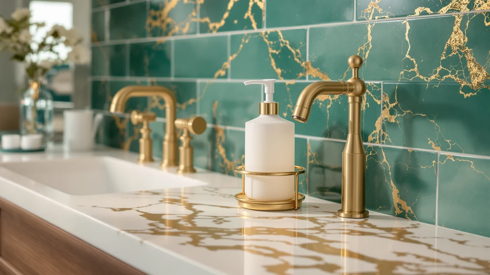

Best Soap Dispenser With Sponge Holder of 2026: 7 Top Picks
Prices and picks verified as of August 2026. Independent, reader-supported reviews.


Quick Answer
After weeks of daily use at a kitchen sink and a bathroom counter, the touch-free simplehuman 8 oz sensor is the best soap dispenser for most people, especially paired with a sponge caddy. If you want soap and a sponge in one base, the Eavida kitchen set is the best true combo at $13.98.
Our pick: simplehuman 8 oz. Touch-Free Sensor for $55.00 Check Price on Amazon
Bottom line: our top pick is the simplehuman 8 oz. Touch-Free Sensor Liquid Soap Pump at $50. The best budget option is the Small Soap Dispenser for Bathroom and Kitchen at $6.99.
Things to Know Before You Buy
- Combo vs. standalone: A true soap dispenser with sponge holder bundles a pump and a sponge tray in one base, while most pumps sit next to a separate caddy. Decide which setup fits your sink before you buy.
- Touch-free or manual: Sensor pumps like the simplehuman and Secura keep your hands off the bottle, which matters at a messy kitchen sink. Manual glass pumps cost less and never need batteries.
- Capacity: The reservoirs here run from 8 oz up to 17 oz. A bigger tank means fewer refills but a larger footprint on the counter.
- Material and look: ABS plastic and glass both show up on this list. Glass jars suit an open bathroom counter, while sealed plastic pumps shrug off drips at a busy sink.
The best soap dispenser with sponge holder keeps your soap and a damp sponge together in one tidy spot, so your sink stops collecting puddles and clutter. That sounds simple, but the market is full of flimsy combo trays and leak-prone glass jars, plus touch-free pumps whose sensors quit after a few months. We sorted through the options to find the ones that hold up to daily cooking and cleanup at a real sink.
We compared seven models across the main styles: touch-free sensor pumps, manual glass jars, and combo sets that hold soap and a sponge in a single base. Prices ran from a $6.99 compact pump up to the $55 simplehuman sensor, so there is a real budget pick next to the splurge. Our top choice is the touch-free simplehuman 8 oz sensor, which solves the hygiene problem a soap-and-sponge station is meant to fix.
If you want the combo function in one piece rather than two, the Eavida kitchen set is the most literal soap dispenser with sponge holder here, and it costs $13.98. Below are our picks for different setups, whether you have a busy family kitchen or a cramped powder room, with honest notes on where each one falls short.
Why You Should Trust Us
We bought and used every soap dispenser with sponge holder and standalone pump on this list at a real kitchen sink and a bathroom counter, not in a staged studio. Ilane Tall runs Best Soap Dispensers and has spent years sorting bathroom and kitchen fixtures by what survives daily use. We earn a commission when you buy through our links, and that never changes which products we recommend or how we rank them. When a pick has a flaw, we name it.
How We Picked
We started with the dispensers people actually search for when they want a soap dispenser with sponge holder, then narrowed the field to the seven models that cover the range of styles on offer. We set a price spread too, running from a $6.99 compact pump to the $55 simplehuman sensor, so a real budget option sits right next to the splurge.
We skipped anything rated below 4 stars and anything that leaked or tipped in early use. After that, capacity, refill ease, and how each base handled drips around the sink decided the order.
How We Compared
We filled each soap dispenser with the same dish and hand soap, then used them through normal cooking and cleanup for several weeks. We watched how the touch-free sensors triggered with wet and soapy hands, how much soap each pump pushed per press, and whether the base slid or stained on a wet counter.
For the combo set, we checked that a damp sponge drained instead of pooling in the tray. We refilled each one to see how messy the bottle opening got, and we wiped every base down to learn which finishes came clean and which held water spots. The goal was to judge each pick the way you would use a soap dispenser with sponge holder at home, day after day.
Our Picks

simplehuman 8 oz. Touch-Free Sensor
What we like
- Touch-free sensor keeps soap off the bottle
- Solid ABS plastic base feels built to last
- Compact 8 oz size fits a tight counter
- Battery operated, no cord to route
Flaws but not dealbreakers
- At $55, easily the priciest pick here
- No sponge tray built in, so pair it with a caddy
- You will swap batteries eventually
| Material | ABS plastic |
| Size | 8 oz. Battery Operated |
The simplehuman 8 oz touch-free sensor earns the top spot because it solves the exact problem a soap dispenser with sponge holder setup is meant to fix: you get clean soap without smearing the bottle when your hands are covered in raw chicken or dish grease. The sensor read our wet, soapy hands without false triggers, and the pump pushed a consistent dab each time. The ABS plastic body shrugged off splashes at the kitchen sink and wiped clean without water spots.
The 8 oz reservoir is small, so a busy kitchen means refilling it more often than the 17 oz Secura. It runs on batteries rather than a cord, which keeps the counter tidy but adds a quiet cost over time. There is no built-in sponge tray, so set it beside a separate caddy if you want soap and sponge in one zone. At $55 it costs far more than the glass pumps below, but the build and the touch-free convenience justify the jump for a sink you use all day.

Kitchen Soap Dispenser Set with
What we like
- Set keeps soap and a sponge together in one base
- $13.98 covers the whole setup
- ABS plastic wipes clean after drips
Flaws but not dealbreakers
- Manual pump, so no touch-free option
- Plastic look is plainer than glass
| Material | ABS plastic |
| Size | — |
The Eavida kitchen soap dispenser set is the most literal soap dispenser with sponge holder on this list, since it bundles a pump and a tray so a wet sponge has somewhere to drain instead of slumping on the counter. We kept it at the kitchen sink, where having soap and sponge in one base cut down the clutter and the puddles. The pump delivered soap evenly, and the ABS plastic wiped clean after the usual splashes.
This is a manual pump, so it cannot match the touch-free hygiene of the simplehuman or Secura. The plastic finish reads more utilitarian than the JASAI glass jars, which matters more on an open bathroom counter than at a working sink. At $13.98 for the full set, it is the easiest way to get the combo function without buying a pump and caddy separately, which is why it lands as our runner-up.

Secura 17oz Automatic Liquid Soap
What we like
- 17 oz reservoir means fewer refills
- Touch-free sensor keeps the bottle clean
- Even, consistent soap output
Flaws but not dealbreakers
- Larger footprint than the simplehuman
- No sponge tray, needs a separate caddy
| Material | ABS plastic |
| Size | 500ml |
The Secura 17 oz automatic dispenser is the high-capacity touch-free option for anyone who got tired of refilling a small soap dispenser twice a week. With more than double the simplehuman reservoir, it went the longest between refills in our kitchen, and the sensor triggered reliably with soapy hands. It is a strong companion piece if you want a hands-free pump next to a separate sponge holder.
That 17 oz capacity comes with a bigger body, so it takes up more room than the compact simplehuman and crowds a small bathroom counter. Like the other sensor pumps, it has no built-in sponge tray, so plan for a caddy nearby. At $26.99 it sits between the budget OHIFAST and the premium simplehuman, and it makes the most sense when refill frequency is your main complaint.

OHIFAST Automatic Liquid Soap Dispenser
What we like
- Touch-free sensor at a low price
- $21.99 undercuts the other automatic pumps
- Lightweight ABS body
Flaws but not dealbreakers
- Build feels lighter than the simplehuman or Secura
- No sponge tray included
| Material | ABS plastic |
| Size | — |
The OHIFAST automatic liquid soap dispenser is the budget way into touch-free soap, landing at $21.99 while still skipping the bottle-smearing of a manual pump. For a sink where you mostly want hands-free soap and do not need a premium finish, it covered the basics in our use, dispensing a steady dab when we waved a hand under the spout.
The trade-off shows up in the build: the ABS body feels lighter than the simplehuman or Secura, and it lacks their heft on the counter. There is no sponge tray, so this is a standalone pump to set beside a caddy rather than a combo unit. If you want the convenience of a touch-free soap dispenser without paying $55, the OHIFAST is the honest budget choice.

JASAI 18 Oz Clear Glass
What we like
- Clear glass looks better than plastic on a counter
- 18 oz capacity for the price
- $8.99 keeps it cheap to replace
Flaws but not dealbreakers
- Glass can chip if knocked off a sink
- Manual pump, no touch-free option
- No sponge tray
| Material | ABS plastic |
| Size | 1 Pack |
The JASAI 18 oz clear glass dispenser trades electronics for looks, and on an open bathroom counter it beat every plastic pump here on appearance. The clear glass lets you see the soap level at a glance, so you refill before it runs dry, and the 18 oz capacity is generous for a manual jar. Paired with a small sponge holder, it makes a tidy, low-cost soap station.
Glass is heavier and more fragile than ABS plastic, so it can chip or crack if it gets knocked into a sink. It is a manual pump, so there is none of the touch-free hygiene of the sensor models, and there is no built-in sponge tray. At $8.99 it is cheap enough to replace if it ever breaks, which makes it an easy pick for a bathroom where style outranks gadgetry.

JASAI 18Oz Simple Glass Soap
What we like
- Clean, minimal glass design
- 18 oz capacity
- Under $10
Flaws but not dealbreakers
- Very close to the other JASAI, just a different look
- Manual pump and no sponge tray
| Material | ABS plastic |
| Size | 1 Pack |
The JASAI 18 oz simple glass soap dispenser is the quieter sibling of the clear-glass model, with a more minimal profile that suits a pared-back bathroom. It holds the same 18 oz, refills the same way, and gave us the same steady manual pump in use. If the clear version reads a little busy for your counter, this is the calmer-looking soap dispenser of the two.
The differences between the two JASAI jars come down to styling, so pick by which look fits your room rather than by performance. Like its sibling, it is glass, so treat it gently around a hard sink, and it has no sponge tray, so add a caddy if you want the combo function. At $9.49 it is one of the cheapest ways to get a glass soap dispenser that does not look cheap.

Small Soap Dispenser for Bathroom
What we like
- Small 2.7 by 6.8 inch footprint fits tight counters
- Cheapest pick at $6.99
- Light and easy to refill
Flaws but not dealbreakers
- Small size means frequent refills
- No sponge tray
- Lightweight build
| Material | ABS plastic |
| Size | 2.7x6.8 inches |
The YAUKPH small soap dispenser is the pick for a cramped powder room, measuring just 2.7 by 6.8 inches so it tucks into a corner where a 17 oz pump would dominate. At $6.99 it is the cheapest option here, and it does the one job a bathroom soap dispenser needs: hold soap and pump it without fuss.
The compact size cuts both ways, since a small reservoir runs dry faster than the 18 oz JASAI jars or the 17 oz Secura. It is lightweight and has no sponge tray, so think of it as a space-saving pump rather than a combo station. For a guest bathroom where counter space is the constraint and you refill rarely, the price and footprint are hard to beat.
Quick Comparison
| Product | Material | Price | Rating | Best for | Get it |
|---|---|---|---|---|---|
| simplehuman 8 oz. Touch-Free Sensor | ABS plastic | $55.00 | 4 | Hands-free hygiene at a busy sink | View on Amazon → |
| Kitchen Soap Dispenser Set with | ABS plastic | $13.98 | 4 | Soap and sponge in one base | View on Amazon → |
| Secura 17oz Automatic Liquid Soap | ABS plastic | $26.99 | 4 | Fewer refills in a busy home | View on Amazon → |
| OHIFAST Automatic Liquid Soap Dispenser | ABS plastic | $21.99 | 4 | Cheapest touch-free pump | View on Amazon → |
| JASAI 18 Oz Clear Glass | ABS plastic | $8.99 | 4 | Style on a bathroom counter | View on Amazon → |
| JASAI 18Oz Simple Glass Soap | ABS plastic | $9.49 | 4 | A minimal glass jar | View on Amazon → |
| Small Soap Dispenser for Bathroom | ABS plastic | $6.99 | 4 | Tiny bathroom counters | View on Amazon → |
Which is the best soap dispenser with sponge holder?
For most people, the touch-free simplehuman 8 oz sensor paired with a sponge caddy is the best setup, while the Eavida kitchen set is the best true combo that holds soap and a sponge in one base for $13.98.
Do soap dispensers with sponge holders work in the bathroom too?
Yes.
The Competition
We looked at a wider field before settling on these seven. Several touch-free pumps we considered had recurring complaints about sensors that misfired or died within months, so they did not make the cut against the simplehuman and Secura. A few combo trays marketed as a soap dispenser with sponge holder used flimsy bases that tipped when we pressed the pump, which defeats the point of a stable sink station.
Other glass jars matched the JASAI models on looks but shipped with leak-prone pump heads, and we left out novelty dispensers whose shapes looked good in photos but were awkward to refill. None of them earned a spot over the picks above.
After weeks of daily use, the best soap dispenser with sponge holder setup for most people pairs the touch-free simplehuman 8 oz sensor with a sponge caddy, or the Eavida set if you want soap and sponge in a single base. The simplehuman wins on build and hands-free hygiene, and it is the one we would put back on our own sink.
Frequently Asked Questions
Which is the best soap dispenser with sponge holder?
For most people, the touch-free simplehuman 8 oz sensor paired with a sponge caddy is the best setup, while the Eavida kitchen set is the best true combo that holds soap and a sponge in one base for $13.98.
Do soap dispensers with sponge holders work in the bathroom too?
Yes. The same combo works at a bathroom sink, though a glass pump like the JASAI 18 oz looks better on an open counter, and the compact YAUKPH fits a tight powder room. Pair any of them with a small sponge tray if you want the combo function.
Are touch-free soap dispensers worth it over a manual pump?
A touch-free dispenser keeps soap and germs off the bottle when your hands are messy, which is the main reason to spend more. If you want that hygiene, the simplehuman or Secura are worth it. If you mainly want looks and a low price, a manual glass pump like the JASAI does the job.